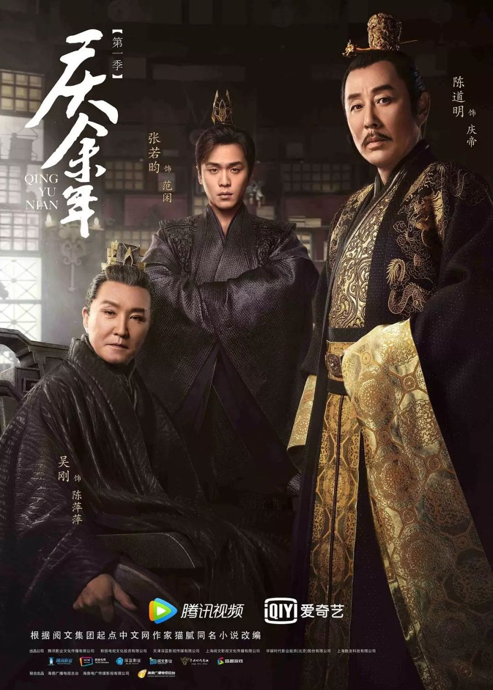
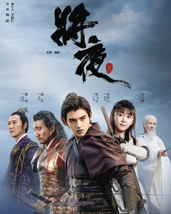

You press play on a Chinese fantasy drama. Someone is meditating on a mountain. Suddenly they’re flying. Someone mentions their Golden Core. Lightning strikes from heaven. And you realize you have no idea what’s happening.
Welcome to wuxia and xianxia — two of the most influential Chinese storytelling traditions. Once you understand the framework, everything clicks.
Wuxia (武侠): Martial Heroes in the Jianghu
Wuxia literally means “martial heroes.” It’s grounded in historical China. No gods. No immortality. Just martial artists who’ve trained their bodies and internal energy to superhuman levels.
The world they move in is called jianghu — a shadow society of sects, clans, wandering swordsmen, revenge plots, and strict honor codes.

A perfect entry point. It blends martial arts with court politics. The Grandmasters are terrifyingly powerful — but still human. No immortals. Just peak mastery.

Sword sects. Revenge. Strategy. It edges toward cultivation systems, but keeps its core grounded in jianghu politics and swordsmanship.
Xianxia (仙侠): Immortal Heroes and Cultivation
Xianxia means “immortal heroes.” This is where things go cosmic.
The key concept is cultivation — training body and spirit to transcend mortality. Characters absorb spiritual energy, break through realms, survive heavenly tribulations, and eventually become immortals or gods.

Academy training. Spiritual realms. Cosmic-level threats. The show gradually builds its cultivation system, making it one of the most accessible serious xianxia entries.

Gods. Reincarnation. Eternal love. The cultivation system exists, but the emotional core is romance across lifetimes. Visually grand and tragic in scale.
Wuxia vs Xianxia — The Difference
- Historical grounding
- Martial arts mastery
- Qi but no immortality
- Jianghu politics
- Human limits (mostly)
- Full fantasy world
- Cultivation realms
- Immortals & gods
- Heavenly tribulations
- Romance across lifetimes
How to Start Watching
New to the genre?
Start with Joy of Life for accessible wuxia.
Try Ever Night if you want structured cultivation fantasy.
Go with Ancient Love Poetry if you want immortal romance.
Pick Sword Dynasty if you want something in between.
The Final Word
Don’t try to map this onto Western fantasy rules. Let the genre teach you its language.
Once you understand qi, cultivation, and jianghu, you stop being confused — and start being completely hooked.